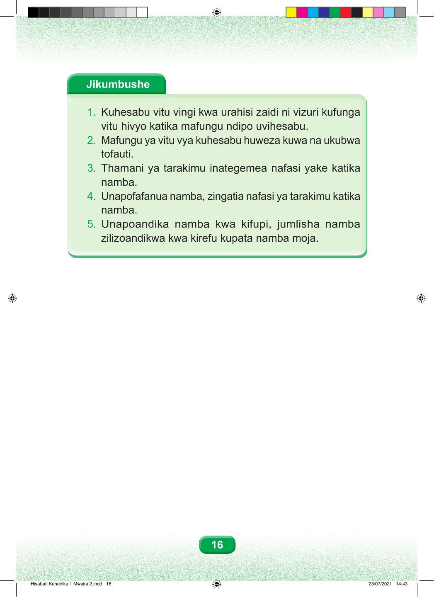

Jikumbushe 1. Kuhesabu vitu vingi kwa urahisi zaidi ni vizuri kufunga vitu hivyo katika mafungu ndipo uvihesabu. 2. Mafungu ya vitu vya kuhesabu huweza kuwa na ukubwa tofauti. 3. Thamani ya tarakimu inategemea nafasi yake katika namba. 4. Unapofafanua namba, zingatia nafasi ya tarakimu katika namba. 5. Unapoandika namba kwa kifupi, jumlisha namba zilizoandikwa kwa kirefu kupata namba moja. 16 Hisabati Kundirika 1 Mwaka 2.indd 16 23/07/2021 14:43